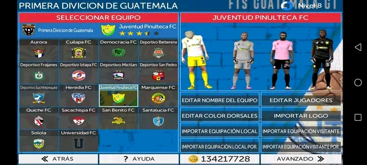
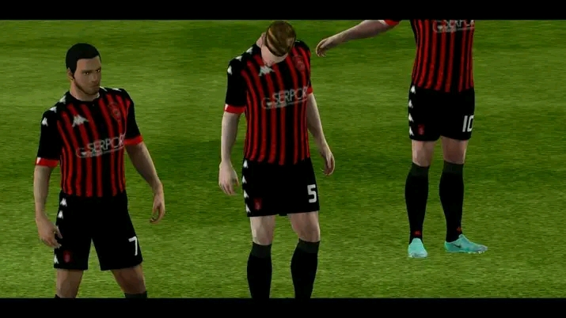

😱 FTS 24 ATUALIZADO | LIGAS EUROPEIAS, KITS E ELENCOS E MUITO MAIS 😱
FTS Mod Game for the 2024 Version
Introduction
Football is one of the most popular sports in the world, with millions of fans around the globe. With the advancement of technology, football enthusiasts now have the opportunity to experience the thrill of the game through virtual gaming. First Touch Soccer (FTS) Mod game is one such game that allows players to simulate the real-life football experience on their mobile devices. In this essay, we will delve into the details of the FTS Mod game for the 2024 version, exploring its features, gameplay, and overall impact on the gaming community.
Features of FTS Mod Game 2024
The latest version of FTS Mod game for 2024 comes packed with exciting new features that enhance the overall gaming experience. One of the key features of the game is the updated player rosters, allowing players to take control of their favorite football stars from top clubs around the world. From Messi to Ronaldo, players have the opportunity to build their dream team and compete in various tournaments and leagues.
In addition to the updated player rosters, FTS Mod game for 2024 also includes realistic graphics and animations that bring the game to life. The detailed stadiums, crowd chants, and player celebrations add to the authenticity of the game, making players feel like they are on the field themselves.
Furthermore, the latest version of FTS Mod game introduces new game modes and challenges for players to enjoy. From penalty shootouts to cup tournaments, players can test their skills and compete against other gamers from around the world. The game also features improved AI, making gameplay more challenging and rewarding for players.

Gameplay
FTS Mod game for the 2024 version offers a smooth and responsive gameplay experience for players. The intuitive controls make it easy for players to navigate the field, pass the ball, and score goals. The game also includes various tactical options, allowing players to customize their gameplay and create strategic plays to outsmart their opponents.
One of the standout features of the gameplay in FTS Mod game for 2024 is the dynamic weather system. Players have to adapt to changing weather conditions, such as rain or snow, which can impact the speed and accuracy of their shots. This adds an extra layer of realism to the game and challenges players to adjust their tactics accordingly.
Moreover, the game offers a multiplayer mode, allowing players to compete against friends or other gamers online. The multiplayer mode features real-time matches, where players can showcase their skills and rise through the ranks to become the ultimate football champion. The competitive nature of the multiplayer mode adds an exciting and social element to the game, creating a sense of community among players.

Impact on the Gaming Community
FTS Mod game for the 2024 version has had a significant impact on the gaming community, attracting a large and dedicated fan base. The game provides an immersive and realistic
⚠️ some files maybe encrypted, consider locating passwords before downloading.
.png)
.png)
.jpeg) FTS Mod Game for the 2024 Version
FTS Mod Game for the 2024 Version